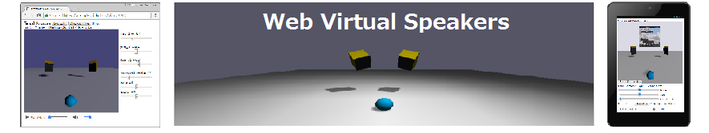
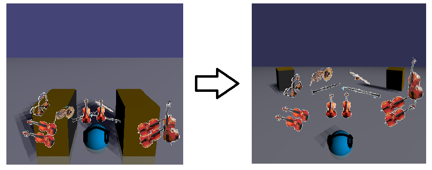
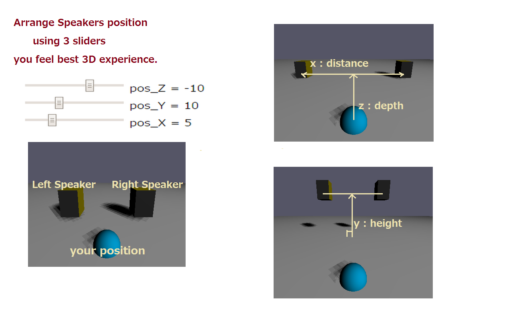

Using headphones or earphones, you feel the sound comes from just close to your ears or from the center of the head.
It's quite different from the sound in the audio room with speakers or the real concert hall.
WVS is a WebApp converts your favorite music to spacial 3D sound by HRTF(head-related
transfer function).
HRTF can locate sounds in three dimensions in direction abobe and below,
front and rear, left and right,
but not so effective for recognizing the
distance of the frontal sound source. Why?
A sound wave from your front position will directry reach to your ears rather than through your brain, so the time and level difference between both ear (ITD,ILD) and reflection from the wall will be more significant. WVS includes these effects, and also it works efficiently for the sound files mixed of separately recorded tracks in the studio ( Multi-Track Recording ).

Supported audio codec is FLAC, WAV, MP3, OGG, and requires a PC/Mobile Phones,Tablet supported WebAudio.
Use sliders to move speakers.
( x : distance between the speakers y/z: height / depth of the speakers. )

[URL]
for PC & Mobile: https://virtualsp.github.io/VSP/
[* features *]
/Improved the
sound sense of depth. ( Sep 2021 / Jan. 2022:HRTF+)
/ PWA supported. ( Offline Use / Install to Desktop or Home
: Feb 2020 )
How to Use Progressive Web Apps on PC/Android
https://support.google.com/chrome/answer/9658361?co=GENIE.Platform%3DDesktop&hl=en
/ Corresponds to chrome 66 autoplay policies (Apr.2018)
/ Improved natural sound quality (Apr.2018)
/ Display embeded Album Art
treble
/ Supports FLAC files !!
/ Added play loop button
/ Automatically save/load speakers position for each music file on local storage
/ Multiple file select available
/ Bass-Treble control
[ Youtube ] Virtual Speakers for Youtube & Youtube Music is here
[ Data Accessing Policy ]
---- Local Storage ----
WVS automatically stores following data to local storage of your device when you moved sliders position.
{ key } music filename
{ data } the speakers position(x,y,z) and bass-treble level
You can clear Local Storage data from "chrome://settings/cookies/detail?site=virtualsp.github.io"
Or use Strage Inspector ' fn + f12 ' ( chrome ) / ' shift + f9 ' ( firefox )
Android : Open wrowser and try ' settings -> site settings -> storage '
---- Google Analytics Measurement Protocol ----
WVS uses 'Google Analytics Measurement' service. Google Analytics processes following data.
The total time a user spends on the site/
The geographic location of the user/
What browser and operating system are being used/
Screen size and whether Flash or Java is installed/
The referring site.
[ Contact and feedback ] bobie820g@gmail.com